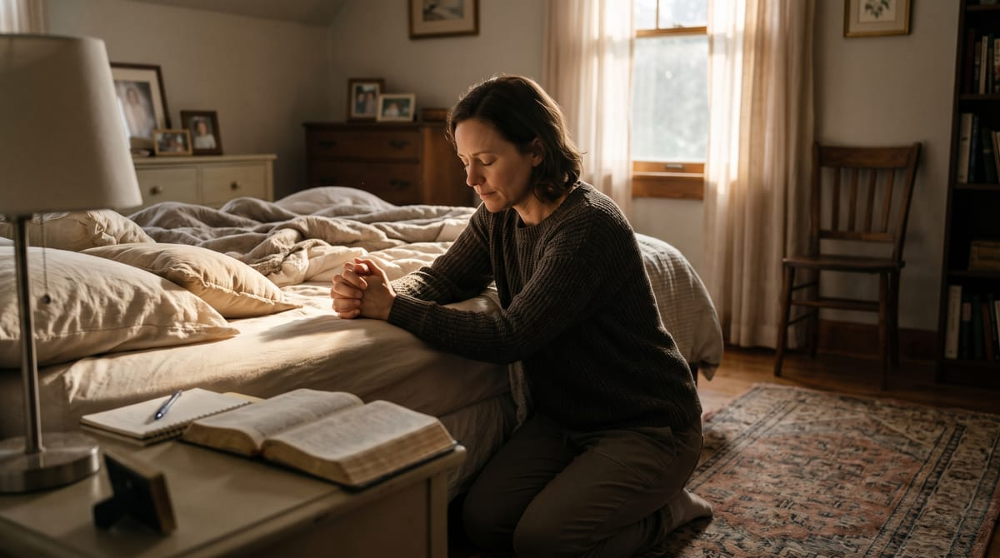
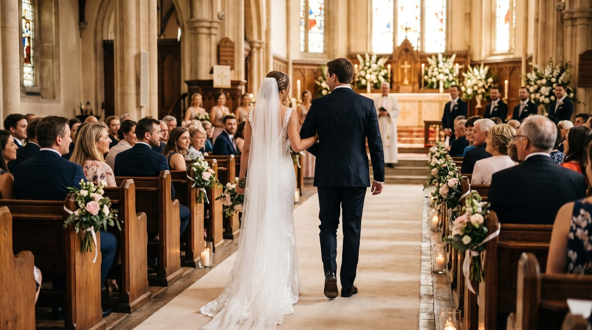
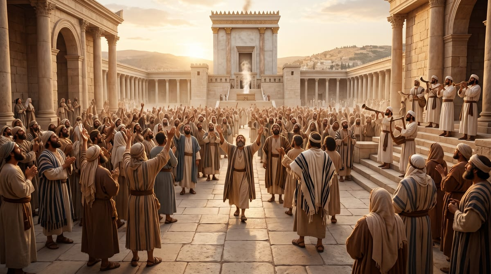
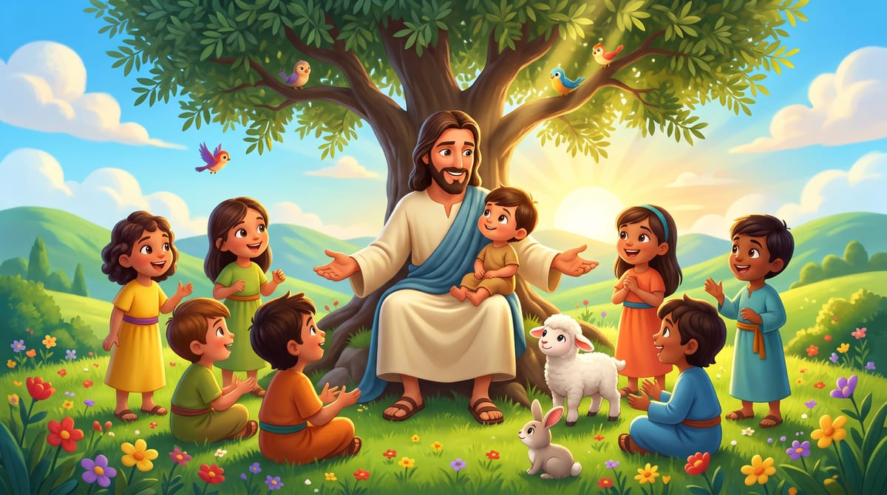

Un Momento con Dios
Un espacio íntimo de reflexión bíblica y comunión con el Padre para renovar tu espíritu y llenar tu tarde de esperanza y paz en Su presencia.
Cada programa está diseñado para fortalecer tu vida espiritual, tu familia y tu caminar con Jesús.
Un espacio íntimo de reflexión bíblica y comunión con el Padre para renovar tu espíritu y llenar tu tarde de esperanza y paz en Su presencia.
Mensajes inspiradores, testimonios reales y promesas de la Palabra de Dios que dejan una huella imborrable de fortaleza y fe viva en tu corazón.
Conversaciones sinceras, cálidas y prácticas sobre los desafíos cotidianos de la vida cristiana, salud integral, familia y fe en el mundo actual.

Un altar de intercesión donde unimos nuestras voces ante el Trono de la Gracia, orando en vivo por cada petición y motivo de oración de nuestra audiencia.

Orientación espiritual prematrimonial y principios bíblicos para forjar noviazgos con propósito y construir un hogar sólido edificado sobre la Roca.
Espacio de diálogo enriquecedor sobre la vida del hogar, la educación de los hijos y vivencias que fortalecen la fe de toda la familia cristiana.
Estudio bíblico reverente y profundo de las profecías de Daniel y Apocalipsis, arrojando luz y certeza sobre el tiempo del fin y el pronto regreso de Cristo.

Bienvenida al Santo Sábado con himnos tradicionales de la fe adventista, alabanzas de gratitud y quietud devocional para comenzar las horas sagradas.

Historias bíblicas dramatizadas, cantos alegres y lecciones de fe y obediencia preparadas con ternura para los niños y niñas del hogar.
Fuera del horario de programas especiales en vivo, disfruta de nuestra señal ininterrumpida con himnos, música sacra y lecturas bíblicas.